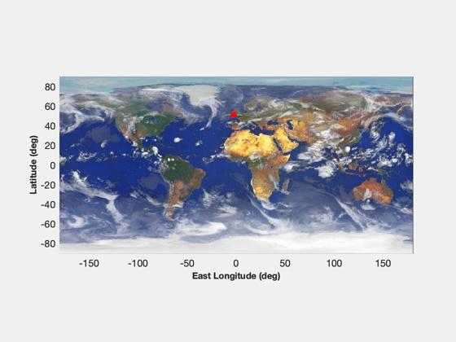
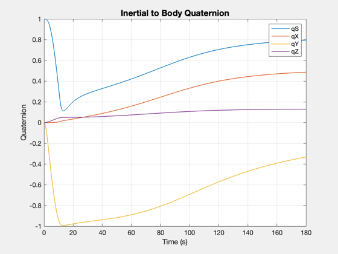
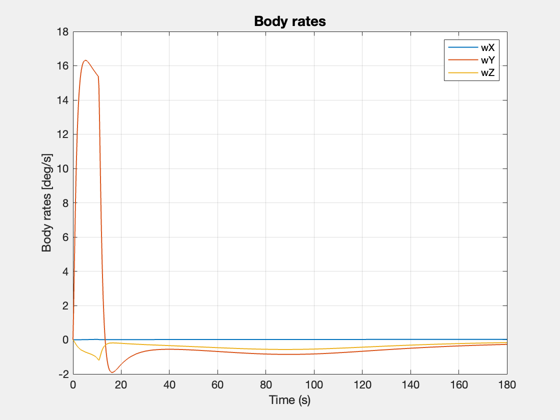
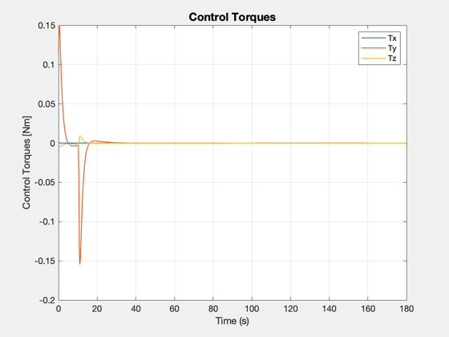
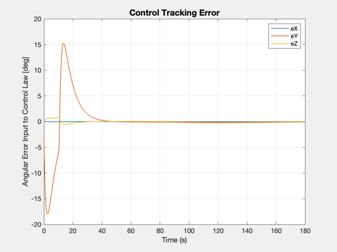
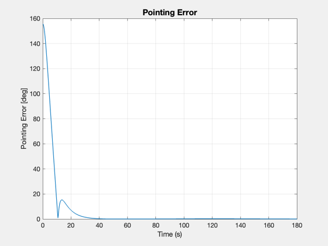
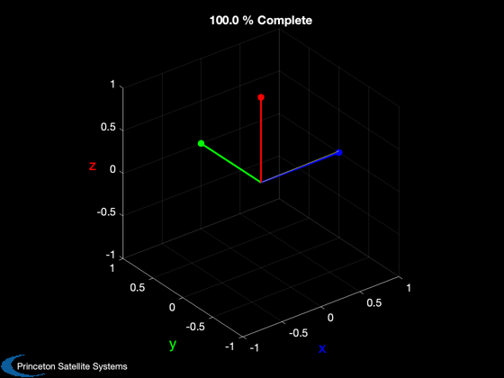

Demonstrate a spacecraft in orbit pointing at a target on the Earth
------------------------------------------------------------------------ See also C2DelZOH, PIDMIMO, CoordinateTransform, QForm, QMult, QPose, U2Q, Constant, AnimateVectors, Map, RK4, Unit, Date2JD, OrbRate, RVFromKepler, Period, DMS2Rad, GMSTime, DeltaQTarget, AttitudeTarget, FRB, FOrbCart ------------------------------------------------------------------------
Contents
%-------------------------------------------------------------------------- % Copyright (c) 2008 Princeton Satellite Systems, Inc. % All rights reserved. % Since version 8. %--------------------------------------------------------------------------
Setup the orbit
%----------------
Constants
%-------------- Re = 6378.14; % radius of Earth (km)
Ground target
%-------------- tgt.latitude = DMS2Rad( 51, 15, 44.20 ); % latitude to point at (rad) tgt.longitude = DMS2Rad( -2, 17, 17.27 ); % longitude to point at (rad) tgt.u = [1;0;0]; % body vector to point
Simulation parameters
%---------------------------- jD = Date2JD+100; % today's date in Julian date format alt = 400; % altitude of orbit (km) tSpan = 3*60; % time span to simulate (seconds) tSamp = 0.25; % control sampling time (seconds)
Compute orbital elements and show ground track with target
%----------------------------------------------------------- time = 0:tSamp:tSpan; T = Period(Re+alt); % orbit period (sec) gms = GMSTime( jD )*pi/180; % Greenwich mean time at jD (deg) rA = gms-pi/2+tgt.longitude; % Right ascension (rad) inc = tgt.latitude; % Inclination (rad) n = OrbRate( Re+alt ); % mean orbit rate (rad/s) M = pi/2 - tSpan/2*n; % initial mean anomaly el = [Re+alt, inc, rA, 0, 0, M]; % orbital elements t = linspace(0,tSpan,30); [r,v] = RVFromKepler( el, t ); lla = zeros(size(r)); for i=1:length(t), lla(:,i) = CoordinateTransform('eci','llr',r(:,i),jD+t(i)/86400); end Map('Earth','2d') plot(lla(2,:)*180/pi,lla(1,:)*180/pi,'y') plot(tgt.longitude*180/pi,tgt.latitude*180/pi,'r.','markersize',20)
Initial conditions for attitude dynamics
q0 = [1;0;0;0]; % Initial ECI to Body quaternion w0 = [0;0;0]; % Initial angular rates of Body [rad/sec] inertia = eye(3); % inertia matrix [kg-m^2] noiseSigma = 0; % 1-sigma noise level for pointing knowledge [rad]
The plant: rigid body model
Our plant (the rigid body spacecraft) is a double integrator. The input to the the plant is a commanded angular acceleration. The output is an angular rotation.
Compute the plant statespace system
ap = [0 1;0 0]; bp = [0;1]; cp = [1 0]; dp = 0;
The controller
We will now design a PID controller with input "u" and output "y". It will have the following transfer function:
Kr s u
y = Kp u + ---- u + Ki ---
s + wR s
The gains (Kp, Kr, Ki) and the derivative roll-off term (wR) will be computed using the PIDMIMO function. It will compute these controller parameters so that the closed-loop system (the controlled spacecraft) will have the desired properties. We specify the desired properties in terms of: * natural frequency * damping ratio * integrator time constant * derivative roll-off frequency
zeta = 0.7071; % damping ratio (critically damped) omega = 0.3; % natural frequency tauInt = 100; % integrator time constant (sec) omegaR = 4; % derivative roll-off inr = 1; % unit inertia - controller outputs an acceleration rateLimit = .25; % maximum angular rate [rad/s] stepLimit = rateLimit*tSamp;
Calculate state-space control system matrices:
[ak, bk, ck, dk, gains] = PIDMIMO( inr, zeta, omega, tauInt, omegaR); [akd,bkd] = C2DelZOH(ak,bk,tSamp); invInertia = inv(inertia);
Simulation
We will simulate a point mass orbit and a rigid body
xOrb = [r(:,1);v(:,1)]; xAtt = [q0;w0]; mu = Constant('mu earth'); orbitRHS = @(x,t) FOrbCart(x,t,0,mu); d = struct; d.qECIToBody = q0; d.rECI = xOrb(1:3); d.jD = jD; xRoll = [0;0]; xPitch= [0;0]; xYaw = [0;0]; xPlot = zeros(13,length(time)); trq = zeros(3,length(time)); pointingError = zeros(1,length(time)); uTB = zeros(3,length(time)); angleError = trq; qECIToTargetOld = q0; for k = 1:length(time) xPlot(:,k) = [xAtt;xOrb]; % record qECIToBody = xAtt(1:4); % rename for clarity % Compute the new target quaternion %---------------------------------- d.qECIToBody = qECIToBody; d.rECI = xOrb(1:3); d.jD = jD+time(k)/86400; qTarget = AttitudeTarget( 'latlon', d, tgt ); % Limit the total angular change %------------------------------- [qTargetToBody,qECIToTargetOld] = DeltaQTarget(qTarget,qECIToBody,... qECIToTargetOld,stepLimit); qBodyToTarget = QPose(qTargetToBody); qTToB = QMult( QPose(qTarget), qECIToBody ); uTB(:,k) = QForm(qTToB,tgt.u); pointingError(k) = acos(dot(uTB(:,k),tgt.u)); angleError(:,k) = 2*qBodyToTarget(2:4) + randn(3,1)*noiseSigma; % The delta form of the controller %--------------------------------- acc = zeros(3,1); acc(1) = ck*xRoll + dk*angleError(1,k); xRoll = xRoll + akd*xRoll + bkd*angleError(1,k); acc(2) = ck*xPitch + dk*angleError(2,k); xPitch = xPitch + akd*xPitch + bkd*angleError(2,k); acc(3) = ck*xYaw + dk*angleError(3,k); xYaw = xYaw + akd*xYaw + bkd*angleError(3,k); tExt = -inertia*acc; % Numerical integration of the dynamics: xAtt = RK4( @FRB, xAtt, tSamp, time(k), inertia, invInertia, tExt ); xOrb = RK4( orbitRHS, xOrb, tSamp, time(k) ); trq(:,k) = tExt; end
plots
Plot2D(time,xPlot(1:4,:),'Time (s)','Quaternion','Inertial to Body Quaternion'); legend('qS','qX','qY','qZ'); Plot2D(time,xPlot(5:7,:)*180/pi,'Time (s)','Body rates [deg/s]','Body rates'); legend('wX','wY','wZ'); Plot2D(time,trq,'Time (s)','Control Torques [Nm]','Control Torques'); legend('Tx','Ty','Tz'),... Plot2D(time,angleError*180/pi,'Time (s)','Angular Error Input to Control Law [deg]','Control Tracking Error'); legend('eX','eY','eZ'); Plot2D(time,pointingError*180/pi,'Time (s)','Pointing Error [deg]','Pointing Error');    
animation
animate the target vector in the Body frame during the transient period define end of transient period at point when pointing error drops below 1 deg
k = find( pointingError*180/pi > 1 ); AnimateVectors(uTB(:,1:k(end)),'y'); %-------------------------------------- % PSS internal file version information %-------------------------------------- % $Id: b24a4ecc1d4c569af7846955a1cd09fc248009a3 $